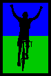

|  |
2006 Low-Key Hillclimbs Overall Results by Category |
pl # rider team week1 week2 week3 week4 week6 week7 overall 1 52 Stephen Morris Zero 52.99 - - - - - 52.99
pl # rider team week1 week2 week3 week4 week6 week7 overall 1 37 Bill Lloyd Le Matin 118.39 - - 114.21 122.17 118.26 358.82
pl # rider team week1 week2 week3 week4 week6 week7 overall 1 51 Tracy Colwell Team Colwell 131.02 - - - 137.20 125.11 393.33 2 2 Kevin Winterfield Low-Key --V-- --V-- 98.19 99.50 98.88 97.01 297.57 3 137 Dave Galvin BMC Racing - - - 121.66 - - 121.66 4 42 Rob McNeill WAV-ARA 113.77 - - - - - 113.77 5 44 Brian Peterson WAV-ARA 96.59 - - - - - 96.59
pl # rider team week1 week2 week3 week4 week6 week7 overall 1 1 Dan Connelly TNT 120.15 115.19 --V-- 119.82 --V-- 116.96 359.95 2 45 Rupert Brauch WAV-ARA 114.76 111.93 - 114.04 122.28 120.54 357.59 3 93 Petro Hizalev Webcor/Alto Velo - - 132.01 123.76 - - 255.77 4 131 Raffi Jrizian Form Fitness - - - 117.97 - - 117.97 5 118 Mike Holt ST Bikes - - - 111.33 - - 111.33
pl # rider team week1 week2 week3 week4 week6 week7 overall 1 48 David Kelly Webcor/Alto Velo 118.52 114.12 121.46 117.49 121.20 117.96 361.18 2 36 Bill Davis Webcor/Alto Velo 115.01 116.40 - - - 111.91 343.32 3 81 Ramon Alarcon San Jose Bike Club - 105.11 - 111.87 - - 216.98 4 47 Gavin McRaley Webcor/Alto Velo 93.00 82.07 - - - - 175.07 5 127 Bryan Buck AV: Old Guys Finish - - - 117.49 - - 117.49 6 155 Erik Best - - - - - 109.25 109.25 7 129 John Christensen San Jose Bike Club - - - 98.56 - - 98.56 8 46 Ken Chern Pen Velo/Kondra 91.42 - - - - - 91.42
pl # rider team week1 week2 week3 week4 week6 week7 overall 1 34 Stephen Fong San Jose Bike Club 88.90 89.05 95.88 91.93 95.09 87.92 282.91 2 25 Tim Porcival Pen Velo/Kondra - - 79.25 72.54 84.01 - 235.81 3 139 Shannon Bankosh San Jose Bike Club - - - - 111.60 103.17 214.77 4 78 Alex Kramer Western Wheelers - 95.74 - 100.50 - - 196.24 5 41 Kwan Low The Cutters - 58.50 58.24 65.78 - 69.40 193.69 6 50 Francis Cebedo RoadBikeReview 92.30 - - - - - 92.30 7 24 Alex Sousa Pen Velo/Kondra - - 83.73 - - - 83.73
pl # rider team week1 week2 week3 week4 week6 week7 overall 1 63 Michael Ma Safeway - 95.00 - - - - 95.00
pl # rider team week1 week2 week3 week4 week6 week7 overall 1 166 Todd Manley San Jose Bike Club - - - - - 94.63 94.63
pl # rider team week1 week2 week3 week4 week6 week7 overall 1 101 Dave Johnson Stanford Cycling - 99.47 96.31 - - - 195.79
pl # rider team week1 week2 week3 week4 week6 week7 overall 1 17 Brian Edwards Hell Riders 118.32 118.54 122.08 116.59 - - 358.94 2 106 Angela Liu Velo Girls - - 77.93 - 78.24 - 156.17 3 175 Jared Jacobs Webcor/Alto Velo - - - - - 104.23 104.23 4 107 Katie Antypas Velo Girls - - 101.49 - - - 101.49 5 28 Colleen Cocoran Fast Chicks - - 90.42 - - - 90.42
pl # rider team week1 week2 week3 week4 week6 week7 overall 1 80 Andrey Revyakin - 119.93 - - - - 119.93 2 154 Anny Henry EMC2/Vellum - - - - - 111.57 111.57 3 104 Tore Nauta Webcor/Alto Velo - 109.04 - - - - 109.04 4 174 Keith Jordan Fremont Freewheelers - - - - - 103.52 103.52 5 14 Chris Barnes Stanford Almuni 99.71 - - - - - 99.71 6 170 Vladimir Sayno San Jose Bike Club - - - - - 99.36 99.36 7 151 Ted Burns Webcor/Alto Velo - - - - - 94.69 94.69 8 149 Steve Sprang - - - - 94.40 - 94.40 9 172 Robert Werner Webcor/Alto Velo - - - - - 90.37 90.37 10 164 David Knight San Jose Bike Club - - - - - 89.81 89.81 11 103 Toby Booth Webcor/Alto Velo - 83.81 - - - - 83.81
pl # rider team week1 week2 week3 week4 week6 week7 overall 1 108 Jesse Czelusta Stanford Cycling - - 112.17 - - - 112.17
pl # rider team week1 week2 week3 week4 week6 week7 overall 1 92 Matthew Catgo NSAID Fred - - 122.93 - - - 122.93
pl # rider team week1 week2 week3 week4 week6 week7 overall 1 7 Cheryl Hennessy Velo Bella 97.18 101.69 - 126.49 114.23 111.56 352.27 2 97 Greg McQuaid Western Wheelers - - 121.72 115.13 - - 236.85 3 89 JT Conklin Identity Engines - 65.73 72.07 72.27 73.19 72.53 217.99 4 116 Shance Ordell Western Wheelers - - - 101.26 112.65 - 213.91 5 85 Chris Soukup San Jose Bike Club - 100.53 - - - 103.82 204.36 6 171 Nathan Parks EMC2/Vellum - - - - - 124.50 124.50 7 84 Ryan Sherlock Mad/Ireland - 120.17 - - - - 120.17 8 176 Dave Rossow Webcor/Alto Velo - - - - - 111.79 111.79 9 65 Martin Voogel Webcor/Alto Velo - 111.22 - - - - 111.22 10 75 Kenneth Norton Pen Velo/Kondra - 110.61 - - - - 110.61 11 157 Tim Lewis San Jose Bike Club - - - - - 109.81 109.81 12 160 Andrew Lee Used to Ride - - - - - 102.80 102.80 13 125 Chris Arriola San Jose Bike Club - - - 101.84 - - 101.84 14 173 Craig Boyce Webcor/Alto Velo - - - - - 97.82 97.82 15 115 John Murphy CalTrain - - - 96.45 - - 96.45 16 168 Stu Maclennon San Jose Bike Club - - - - - 96.18 96.18 17 169 Andy Wissink VSRT - - - - - 92.66 92.66 18 22 Tom Lawrence Team Bikeaholics 90.75 - - - - - 90.75
pl # rider team week1 week2 week3 week4 week6 week7 overall 1 161 Tim Lee Used to Ride - - - - - 68.81 68.81
pl # rider team week1 week2 week3 week4 week6 week7 overall 1 15 Rich Brunner Cruzie 79.66 78.39 - 83.77 88.36 - 251.79
pl # rider team week1 week2 week3 week4 week6 week7 overall 1 31 Patrick Gordis Grizzly Peak Cyclists - - 128.05 - 125.14 123.46 376.64 2 39 Clark Foy San Jose Bike Club 119.13 116.29 - 120.26 - 122.04 361.42 3 122 Michael Gonia Western Wheelers - - - 113.03 117.20 110.00 340.23 4 124 Jeff Farnsworth Western Wheelers - - - 110.42 111.01 107.11 328.53 5 6 Greg Dougald AV: Old Guys Finish 100.29 95.22 104.19 --V-- 104.95 - 313.72 6 29 Dean Larson Team Dino - - 105.02 101.30 104.07 - 310.40 7 71 Marie Borselle Velo Girls - 83.98 94.18 - 76.46 86.63 264.80 8 27 Christine Holmes Librarian - - 76.98 89.60 73.84 - 240.43 9 62 Daryl Spano San Jose Bike Club - 115.96 - - - 119.44 235.40 10 148 Dan Brehmer Organic Athlete - - - - 118.01 113.44 231.45 11 158 Charles Pockell-Wilson Equipe Mood Retro - - - - - 116.62 116.62 12 55 Bob Rosemeyer Pegasus - - 116.61 - - - 116.61 13 165 Allen Wulczynski San Jose Bike Club - - - - - 108.68 108.68 14 142 Rich Hill - - - - 108.58 - 108.58 15 32 Stefano Shiaffino - - 99.48 - - - 99.48 16 12 Craig Baker San Jose Bike Club 94.38 - - - - - 94.38 17 163 Greg Zubick - - - - - 89.94 89.94 18 133 Michael Svihura Western Wheelers - - - 81.05 - - 81.05 19 33 Brian Birkeland ACTC 80.86 - - - - - 80.86 20 144 Jeff Rocca GGTC - - - - 77.97 - 77.97 21 96 Jeff Namba L'Escargot - - 72.89 - - - 72.89 22 30 Christian Farlann L'Escargot - - 39.49 - - - 39.49
pl # rider team week1 week2 week3 week4 week6 week7 overall 1 16 Peter Mehlitz 108.59 107.98 115.46 110.37 112.75 - 338.57 2 18 Jeff Loufit 106.01 - - - 106.88 103.02 315.92 3 73 Barry Burr Men with Guts - 91.72 --V-- - - 87.34 268.59 4 61 Jens Heycke Me - 117.40 - - 126.70 - 244.11 5 26 Rick Martyn Pegasus - - 127.33 - - - 127.33 6 167 Kevin Merritt AV: Old Guys Finish - - - - - 112.31 112.31 7 156 Eric Murray Webcor/Alto Velo - - - - - 96.70 96.70
pl # rider team week1 week2 week3 week4 week6 week7 overall 1 40 Geo Kitta Pen Velo/Kondra 104.64 106.76 112.23 103.03 - 103.27 323.62 2 88 Peter Tapscott AV: Old Guys Finish - 102.21 - - 110.20 109.70 322.11 3 4 Fred E. Stamm Pen Velo/Kondra 106.01 101.79 105.24 107.32 106.22 100.00 319.55 4 21 Pete Heller AV: Old Guys Finish 99.29 - 100.53 --V-- 104.55 99.40 307.62 5 67 Martin Hyland Western Wheelers - 94.48 101.63 100.99 - 98.65 301.27 6 70 Bob Parker AV: Old Guys Finish - 90.10 101.13 98.35 - - 289.58 7 11 Peter Merril Adobe 95.45 92.48 93.90 94.42 96.78 - 286.65 8 111 Pat Parseghian Western Wheelers - - - 91.87 - 81.46 173.33 9 102 James Hill AV: Old Guys Finish - 109.82 - - - - 109.82 10 162 David Stockwell San Jose Bike Club - - - - - 103.63 103.63 11 145 Andrea Ivan AV/Webcor - - - - 99.17 - 99.17 12 99 Roberto St. Domingo San Jose Bike Club - - 96.43 - - - 96.43 13 178 John Mitchell Western Wheelers - - - - - 86.20 86.20 14 132 Joseph Maurer RUSA - - - 73.19 - - 73.19
pl # rider team week1 week2 week3 week4 week6 week7 overall 1 90 H. William Mirbach Pen Velo/Kondra - 90.70 94.01 95.84 98.77 - 288.63 2 177 Dan Stober Western Wheelers - - - - - 86.20 86.20 3 53 Peter A. Pulido BBC - - 83.35 - - - 83.35
pl # rider team week1 week2 week3 week4 week6 week7 overall 1 105 Paul Sudano - - 93.62 87.34 - - 180.97
pl # rider team week1 week2 week3 week4 week6 week7 overall 1 64 Keith Devlin Team Devlin - 88.86 92.35 - 95.46 - 276.67 2 10 Dick Robinson TNT 75.97 75.68 - 78.26 78.15 76.17 232.58
pl # rider team week1 week2 week3 week4 week6 week7 overall 1 110 Edward Miller SLACer - - - 89.49 99.38 - 188.87
pl # rider team week1 week2 week3 week4 week6 week7 overall 1 43 Scott Frake WAV-ARA 125.91 123.31 - - --V-- - 373.84
pl # rider team week1 week2 week3 week4 week6 week7 overall 1 82 Phil Mehlitz Easton/Specialized - 105.93 - - - - 105.93
pl # rider team week1 week2 week3 week4 week6 week7 overall 1 130 Sue Young GDI - - - 100.00 100.84 - 200.84 2 119 J.L. de Jong Meno's Dad - - - 81.77 - 91.76 173.53
pl # rider team week1 week2 week3 week4 week6 week7 overall 1 147 Susanne Schwarz - - - - 107.41 - 107.41
pl # rider team week1 week2 week3 week4 week6 week7 overall 1 35 Ron Brunner Commuter 102.54 100.53 - 104.77 109.06 104.03 317.86
pl # rider team week1 week2 week3 week4 week6 week7 overall 1 86 Alex Matthews No Team - 89.05 - 96.21 - 92.56 277.82
pl # rider team week1 week2 week3 week4 week6 week7 overall 1 100 Oswaldo Orozco San Jose Bike Club - - 102.37 - - - 102.37
pl # rider team week1 week2 week3 week4 week6 week7 overall 1 128 Randal Buck Old Guys - - - 99.42 - - 99.42
pl # rider team week1 week2 week3 week4 week6 week7 overall 1 38 Neil Bliss Platypus Racing 65.92 58.67 - 68.97 - - 193.56
pl # rider team week1 week2 week3 week4 week6 week7 overall 1 49 Adam Tow Blubber Busters 71.54 78.29 71.89 55.85 84.14 72.81 235.25 2 77 Jorge Chang Blubber Busters - 75.26 82.33 77.23 - - 234.82 3 76 Derek Tumulak Blubber Busters - 68.52 - - - - 68.52
pl # rider team week1 week2 week3 week4 week6 week7 overall 1 19 Menso de Jong Santa Cruz Syndicate 120.84 117.97 131.04 117.97 - 92.30 369.85 2 120 Chris May Los Gatos - - - 105.69 - - 105.69 3 153 Neil Waters - - - - - 87.23 87.23 4 113 Greg Heller Monte Vista - - - 54.91 - - 54.91
pl # rider team week1 week2 week3 week4 week6 week7 overall 1 5 Ingrid Erkman TNT 102.99 116.74 - - --V-- 100.00 329.59
pl # rider team week1 week2 week3 week4 week6 week7 overall 1 126 Samual Wilson Webcor/Alto Velo - - - 89.04 92.36 - 181.40
pl # rider team week1 week2 week3 week4 week6 week7 overall 1 8 Craig Swarthout 66.98 63.68 - - - - 130.65
pl # rider team week1 week2 week3 week4 week6 week7 overall 1 9 Ken Straub Team Bikeaholics 90.94 - - - 97.54 94.55 283.03
pl # rider team week1 week2 week3 week4 week6 week7 overall 1 74 Dominic Giampaolo Webcor/Alto Velo - 115.30 - - - - 115.30
pl # rider team week1 week2 week3 week4 week6 week7 overall 1 83 Kieran Sherlock AV: Old Guys Finish - 117.85 - - - 122.73 240.58 2 98 Kate Ladan TNT - - 142.76 - - - 142.76
pl # rider team week1 week2 week3 week4 week6 week7 overall 1 20 James Porter Western Wheelers 115.14 112.96 119.51 115.59 --V-- 116.98 354.74
pl # rider team week1 week2 week3 week4 week6 week7 overall 1 69 Rafael Rius GA Riders - 84.98 - - - - 84.98
pl # rider team week1 week2 week3 week4 week6 week7 overall 1 134 Rae Chang Blubber Busters - - - 80.57 - - 80.57
pl # rider team week1 week2 week3 week4 week6 week7 overall 1 117 David Baker Webcor/Alto Velo - - - 95.56 - - 95.56
pl # rider team week1 week2 week3 week4 week6 week7 overall 1 109 Simon Haw Stanford Cycling - - 107.17 - - - 107.17
pl # rider team week1 week2 week3 week4 week6 week7 overall 1 91 Beau Hoover Team Cyclops - - 63.57 - 73.33 61.62 198.52 2 60 Nathan Hoover Team Cyclops - - 62.56 66.95 63.35 61.62 192.87 3 79 Steve Nash - 73.24 - 72.52 - - 145.75
pl # rider team week1 week2 week3 week4 week6 week7 overall 1 54 Justin Lucke Organic Athlete - - 111.22 113.36 - - 224.59
pl # rider team week1 week2 week3 week4 week6 week7 overall 1 135 Larry Munoz Western Wheelers - - - 90.62 - - 90.62
pl # rider team week1 week2 week3 week4 week6 week7 overall 1 138 Javier Szwarcberg Western Wheelers - - - 91.38 97.61 - 188.99